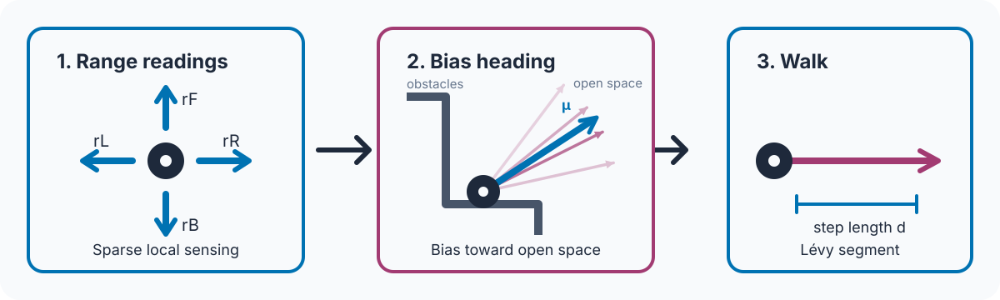
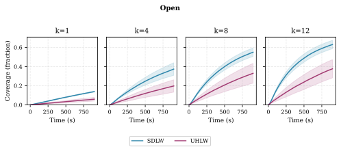
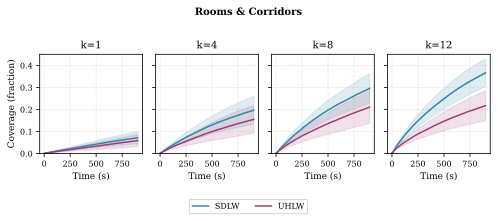
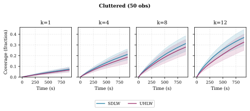
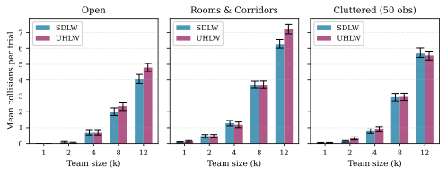

Open Arena
SDLW coverage with four robots.
SDLW turns four local range readings into sensor-adaptive, map-free exploration for decentralized nano-UAV teams.
SDLW coverage with four robots.
SDLW responds to structured geometry.
SDLW maintains reactive exploration among obstacles.
Efficient autonomous exploration with palm-sized nano-UAVs remains challenging due to severe limitations in sensing, computation, and flight endurance. We present a lightweight sensor-driven Lévy walk (SDLW) controller for aerial robots weighing under 50 grams and equipped with sparse local sensing. The method combines discrete Lévy step-length sampling with a sensor-reactive heading policy using directional range measurements. Each robot independently samples its Lévy exponent from a uniform prior to diversify exploration without inter-robot communication for exploration control. Each robot then selects headings using a von Mises distribution that biases motion toward open directions while preserving superdiffusive exploration properties. The controller operates at constant computational cost, enabling scalable multi-UAV exploration. Simulation results show coverage improvements of 79.6% in open arenas, 43.1% in rooms-and-corridors layouts, and 13.6% in cluttered environments, with collision reductions of 13.0%, 7.1%, and 1.4%, respectively, relative to a uniform-heading Lévy walk baseline. This work provides a practical framework for scalable multi-robot exploration on minimal-sensing, resource-constrained nano-UAVs.
Each nano-UAV reads four local directional ranges: front, left, right, and back. SDLW uses this sparse local sensing without global localization, map building, or exploration communication.
A sensor-weighted resultant sets the mean direction of a von Mises heading distribution. Its normalized strength measures directional imbalance in the range readings. A stronger normalized resultant produces broader angular sampling around the mean direction, while a weaker resultant produces more concentrated sampling.
Each robot samples a discrete Lévy exponent independently from a uniform prior and executes heavy-tailed motion segments. The resulting controller remains map-free, decentralized, and constant-time.

Our experiments show that SDLW accelerates coverage accumulation relative to Uniform Heading Lévy Walk (UHLW) across the Open, Rooms and Corridors, and Cluttered (50 obstacles) arenas. SDLW improves mean coverage by 79.6%, 43.1%, and 13.6%, respectively, while reducing mean collision events by 13.0%, 7.1%, and 1.4%, respectively. These results demonstrate the benefit of sensor-adaptive headings across environments with varied geometric complexity.




@inproceedings{leong2026decentralized,
title={Decentralized Scalable Exploration via Emergent Adaptive L{\'e}vy Walks on Minimal-Sensing Platforms},
author={Leong, Wai Lun and Teo, Swee Huat Rodney},
booktitle={2026 IEEE/RSJ International Conference on Intelligent Robots and Systems (IROS)},
year={2026},
address={Pittsburgh, PA, USA},
doi={10.48550/arXiv.2607.25195},
url={https://arxiv.org/abs/2607.25195}
}